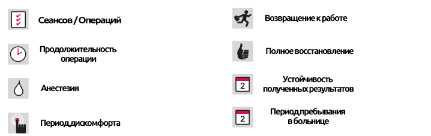

Эстетика носа
Эстетика носа
КРАТКОЕ ОПИСАНИЕ ЛЕЧЕНИЯ
Любой человек хочет иметь самое красивое лицо и тело, особенно женщины. Красота и привлекательность начинаются с лица. Если смотреть со стороны, то идеальное лицо для женщины - это то, где структура лица, носа, глаз и ушей пропорциональны друг другу. Именно по этим причинам эстетика носа является одной из наиболее обсуждаемых и предпочтительных эстетических операций на лице. Иметь идеальный нос, который лучше всего подходит к лицу, является одним из желаний каждого. Одним из наиболее важных требований является обеспечение естественности профиля лица, не нарушая при этом совокупности выражений вашего лица.
Эстетическая операция на носу, известная как ринопластика в медицинском мире, - это изменение формы носа. Можно провести такие процедуры, как уменьшение носа, увеличение, подтягивание кончика и удаление носовой кости (отклонение).
Причины проведения эстетической операции на носу
Существуют две основные причины выбора эстетической операции на носу:
1. ПО ПРИЧИНАМ, СВЯЗАННЫХ СО ЗДОРОВЬЕМ: Эта операция рекомендуется для тех, кто из-за генетических/врожденных дефектов, различных заболеваний или ударов, имеет проблемы с дыханием, имеет заложенный или сломанный нос, имеет проблемы с речью, громко храпит или имеет жалобы на обоняние/на отсутствие запаха
2. ПО ЭСТЕТИЧЕСКИМ ПРИЧИНАМ: Эстетическая операция на носу (ринопластика) - это хирургическое вмешательство, выполняемое для создания приятного носа с эстетической точки зрения путем коррекции областей, которыми недоволен пациент, и, в то же время, коррекция затрудненного дыхания через нос, если таковые имеются. Эта процедура является одной из наиболее часто проводимых. Процедуры, которые могут быть выполнены, включают удаление высоких носовых перемычек и искривления носа, подъема кончиков носа, уменьшение крыла носа и коррекцию искривлений в перегородке, хряще, разделяющем две ноздри, и другие.
На что следует обратить внимание перед операцией
Пациент, желающий перенести эстетическую операцию на носу, должен четко и точно объяснить своему врачу, какой нос ему нужен, и, в случае необходимости, предоставить фотографический пример.
Перед операцией делается фотография пациента, и на компьютере создается желаемый вид для одобрения пациента. Таким образом, пациент также ознакомится с ходом операции и методами, которые будут использоваться.
Минимальный возраст
Эстетические операции на носу могут проводиться у женщин старше 17 лет, а у мужчин - с 18 лет.
Методы проведения операции
Для эстетической операции носа существуют два типа методов: открытый и закрытый. Используемый метод определяется вашим врачом до операции, в то время как решение о том, какие изменения должны быть внесены, обсуждается с пациентом.
Тип анестезии и продолжительность операции
Операция на носу, проводимая в условиях стационара, проводится под общим наркозом. Продолжительность процедуры варьируется между 1-3 часами. После завершения операции в нос помещается силиконовая прокладка и на переносицу накладывается пластырь. Это делается для уменьшения отека после операции, а также для укрепления новой структуры носа и обеспечения его оседания во время заживления.
Пациента выписывают через день после операции. Силиконовая прокладка удаляется через 3-6 дней. Пациентам, перенесшим процедуру ринопластики открытым методом, удаляют швы через 6-7 дней после операции, тогда как пластырь удаляют через 7-8 дней.
Период восстановления
Сразу после операции вокруг глаз пациента могут появиться синяки и отеки из-за кровотечения во время операции и типа кожи пациента. Это совершенно нормально, и такие синяки и отеки постепенно исчезают примерно в течение 2 недель. Для полного заживления носа требуется от 6 месяцев до 1 года.
На что следует обратить внимание после операции
- Хирургическая повязка на носу должна оставаться на месте не менее недели и ее нельзя мочить.
- Вы не должны купаться и избегать парных мест.
- После снятия повязки кожу носа необходимо очистить специальным лосьоном.
- Следует избегать интенсивных спортивных и физических упражнений.
- В течение первых 2 недель нужно тщательно чистить зубы.
- В течение 1 недели следует избегать экстремальных движений лица (жесты) .
- В течение 5 дней нельзя носить контактные линзы.
- Не следует дотрагиваться до носа, который будет чувствительным в течение 4 недель, и защищать его от ударов.
- Нельзя носить очки как минимум 2 месяца.
- Поскольку солнечные лучи наносят вред вашей коже, следует избегать солнечного света и соляриев.